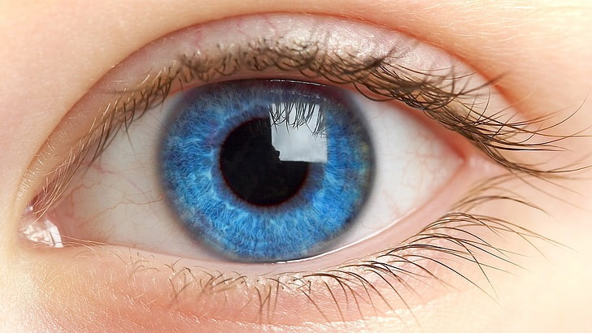

FRAKTALE WYSTĘPUJĄCE W ARCHITEKTURZE
WIEŻA EIFFLA
Budowla ta należy do nurtu architektury fraktalnej. Są to budynki, których kształty projektowane są na wzór fraktalnych wzorów znanych z wielu dziedzin.

FRAKTALE WYSTĘPUJĄCE W LUDZKIM CIELE
OCZY
Całe nasze ciała zbudowane są z fraktali. Nasz mózg, płuca, układ krążeniowy są jak drzewa. Stanowią struktury fraktalne. Najlepiej widocznym fraktalem dla nas samych jest oko. Tęczówki pełne są powtarzających się wzorów.
